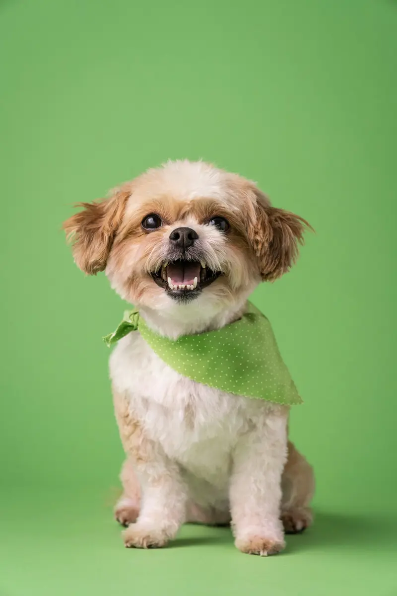
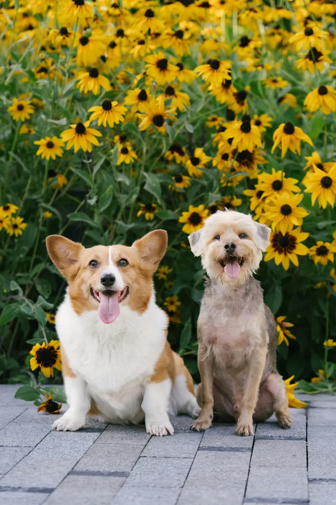
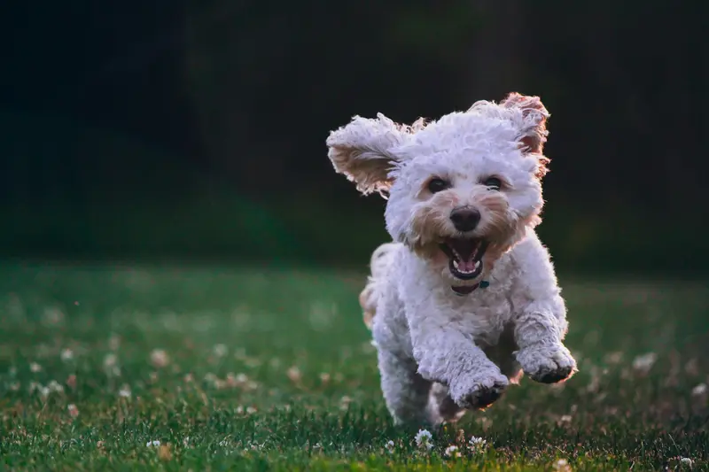
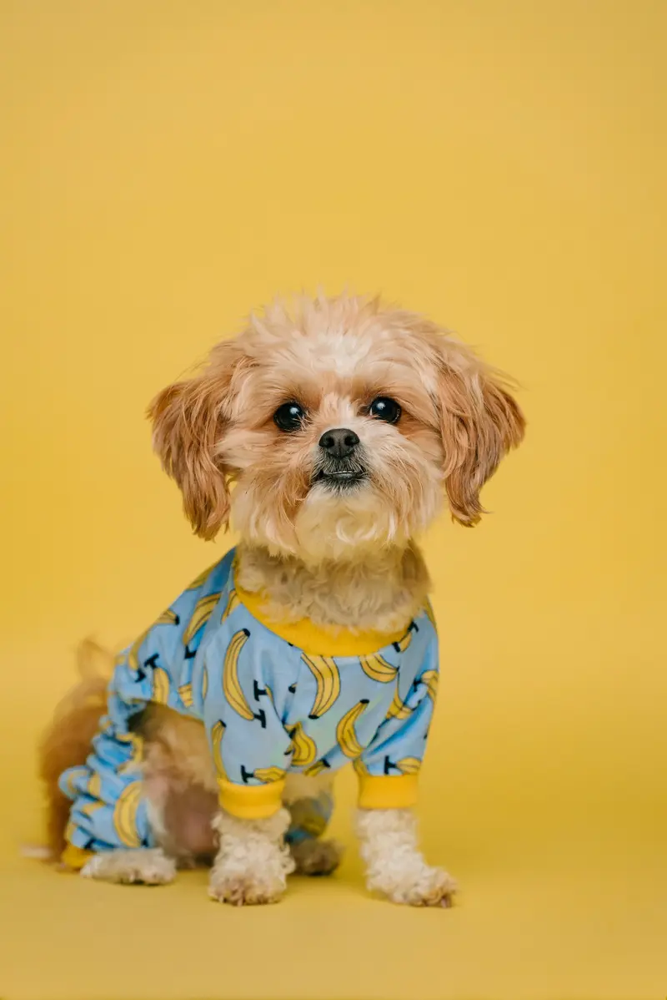
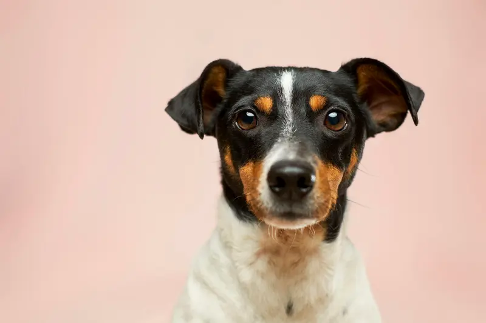

Consulta clínica
Avaliação completa, check-up de rotina, acompanhamento de doenças crônicas e orientação sobre alimentação e comportamento.
Agendar consulta →Clínica veterinária · Prado, Belo Horizonte
Consulta, vacinas, exames, cirurgia e internação para cães e gatos no mesmo endereço. A gente explica cada passo do tratamento e mantém você por perto, do primeiro atendimento à alta.

Pacientes
exigentes? Temos.
Rua Chopin, 314
Prado · BH
Consulta sem pressaTempo para examinar com calma e responder às suas dúvidas.
Exames no mesmo lugarLaboratoriais e de imagem, para chegar ao diagnóstico mais rápido.
Manejo gentilCuidado redobrado com pets medrosos, idosos e gatos.
Tutor sempre informadoNotícias pelo WhatsApp durante exames e internação.
Serviços
Atendemos cães e gatos. Os valores dependem da avaliação de cada paciente: pergunte pelo WhatsApp.
Avaliação completa, check-up de rotina, acompanhamento de doenças crônicas e orientação sobre alimentação e comportamento.
Agendar consulta →
Protocolo para filhotes e reforços anuais de cães e gatos, com a carteira sempre atualizada.
Agendar vacina →Castração e outros procedimentos, com avaliação pré-anestésica e acompanhamento no pós-operatório.
Agendar avaliação →
Quando o pet precisa ficar, a equipe acompanha de perto e manda notícias para você ao longo do dia.
Saber mais →Como funciona
Pelo WhatsApp: diga o nome do pet, a espécie e o motivo da consulta.
Carteira de vacinação, exames anteriores e a lista de remédios que ele toma.
Exame clínico completo. Se precisar de exames, explicamos o porquê de cada um.
Receita e orientações por escrito, e retorno marcado quando for preciso.
Cada fase da vida
O que costuma entrar na rotina do seu pet em cada fase. Na consulta, o plano é ajustado para ele.
Até 1 ano. A fase de montar a proteção.
De 1 a 7 anos. Prevenção para continuar bem.
A partir de 7 anos. Atenção redobrada.
Nossos pacientes


Quem é tutor aqui
“A melhor veterinária de todas. A Bárbara cuida do meu bebê há quase 6 anos, há 1 ano cuida dos meus gatinhos e eu só tenho a agradecer por tudo e por tanto. Ela é paciente, cuidadosa, amorosa e confiável. Uma profissional impecável!”
“Atendimento impecável, visão holística do pet. Clareza no diagnóstico e tratamento. Salvou a vida do meu Maike. Valor justo. Trabalho por amor.”
“Bárbara é uma profissional de excelência e trata os seus pacientes com seriedade e os tutores com empatia e humanidade. Ela cuida do meu gato desde que o adotei (…) é a melhor indicação que eu posso dar para quem possui gatos.”
“Melhor atendimento impossível! Além de competente como veterinária, a Bárbara e toda a equipe da clínica trataram meu companheirinho com muito amor e carinho. Quando fui buscá-lo, após uma castração, ele queria ficar junto das meninas da clínica o tempo todo.”
“Atendimento acolhedor, recebi orientações claras e precisas sobre o estado de saúde dos meus 3 doguinhos (…) Exame físico afetuoso, sem desconforto para os cachorros. Minha primeira e única opção pra cuidar da saúde da minha família canina!”
“Profissional maravilhosa, humana tanto com o pet como com o tutor. Me acolheu no momento mais difícil com a minha idosinha Susi de 19 aninhos. Obrigada, Latalisa, por todo cuidado e carinho dedicado à minha pequena Susi!”
Agendamento
Escolha o motivo e o período, e a gente confirma o horário pelo WhatsApp. Sem cadastro, sem aplicativo.
Endereço e horário
Dúvidas
Não achou a sua? Chama no WhatsApp que a gente responde.
Sim, atendemos cães e gatos. Para os gatos, use uma caixa de transporte fechada e, se puder, cubra com uma toalha durante a espera.
Agende pelo WhatsApp para garantir o horário e evitar espera. Se for urgente, ligue antes de sair de casa para a equipe se preparar.
Sim, atendemos emergências dentro do horário de funcionamento: segunda a sexta, das 8h às 18h, e sábado, das 8h às 14h. Ligue ou mande mensagem antes de sair de casa para a equipe já se preparar. Fora desse horário, procure um hospital veterinário 24h.
Depende da espécie, da idade e da rotina. Em geral, cães tomam a polivalente (V8 ou V10) e a antirrábica, e gatos a polivalente felina e a antirrábica. Na consulta montamos o calendário certo para ele.
A clínica oferece exames laboratoriais e de imagem. Na consulta, o veterinário indica quais são necessários e explica o que cada um avalia.
A equipe manda notícias pelo WhatsApp ao longo do dia e avisa na hora se algo mudar no quadro.